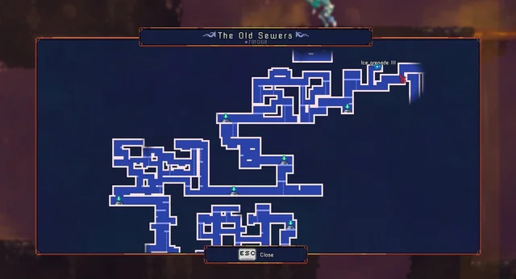
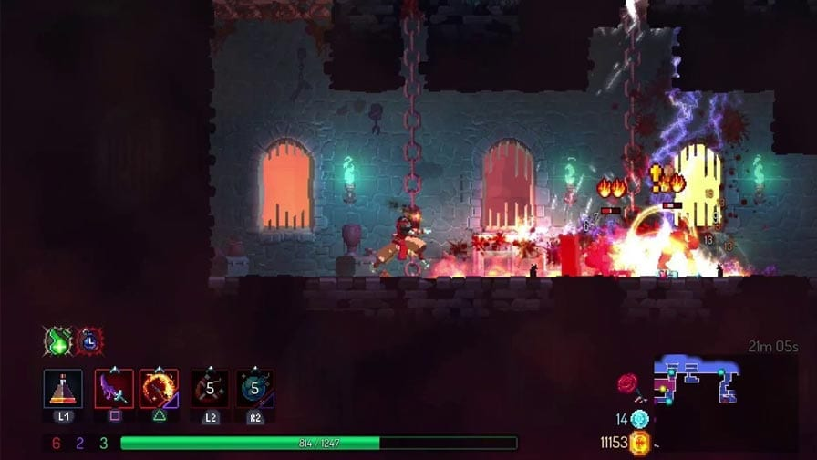
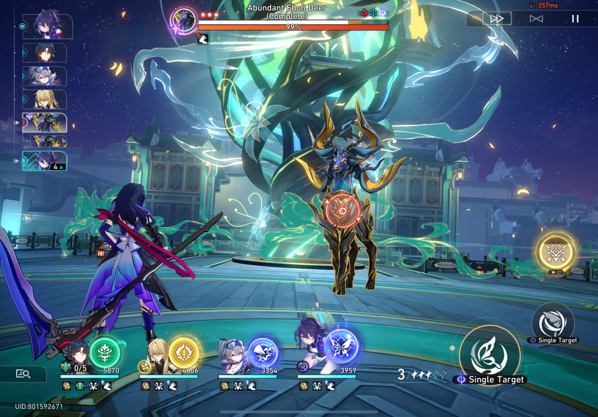
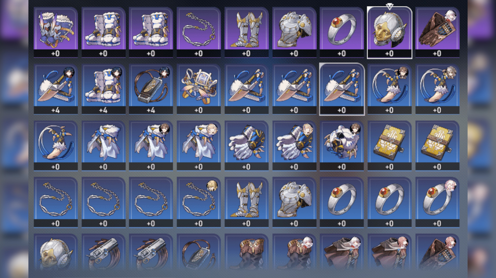
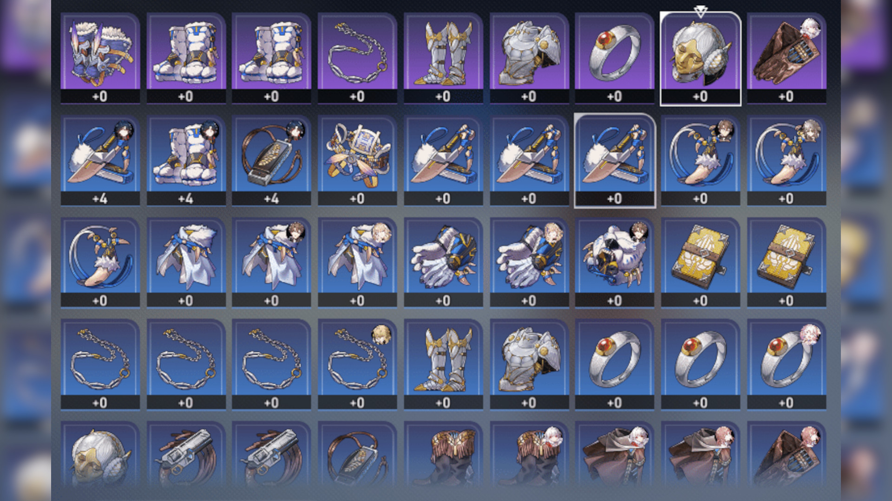
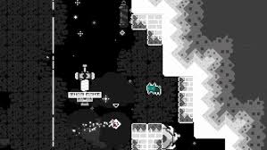
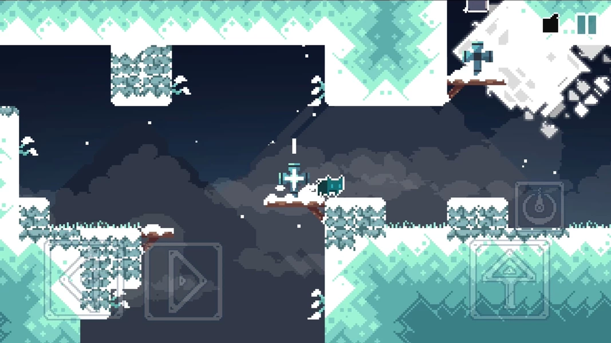

Na nossa sociedade exitem varios tipos diferentes de jogos, "indies, fps, Souls like/rogue like,etc..." mas o que são esses jogos?
O que são jogos FPS? Os jogos FPS são basicamente aqueles em que a perspectiva do jogador é a de estar dentro do corpo do protagonista, vendo o mundo pelos olhos dele. Essa abordagem em primeira pessoa proporciona uma imersão única, fazendo com que o jogador se sinta diretamente envolvido nas ações e decisões do personagem. Uma das características mais marcantes dos jogos FPS é a ação frenética e a adrenalina constante. Geralmente, o objetivo principal é eliminar inimigos usando uma ampla variedade de armas e habilidades. A precisão dos movimentos e a tomada de decisões rápidas são fundamentais para o sucesso no jogo. Além disso, muitos FPS também oferecem modos multiplayer, permitindo que jogadores se enfrentem em batalhas eletrizantes.Os jogos FPS também são conhecidos por sua jogabilidade estratégia
Rougue like são jogos onde você começa do zero e vai subindo de fase caso você morra você volta do zero, É cada fase são aleatorias e os inimigos também e a cada final de fase a um boss. Exisem classes para lhe ajudar na sua aventura mas... O que é classe em "Rogue likes"?
imagem do jogo DEAD CELLS (e um dos Rogue likes)

As classes em Rogue Likes são como "buffs" (ajudar o jogador em algo ou coisa) existem "Magos, guerreiros, arqueiros, assassinos, etc..."
os assasinos tem buffs de furtividade ou velocidade, os magos causam mais dano nas magias (se a Mana acabar boa sorte...), os arqueiros consegue ter maior precisão nas flechas(causam mais dano nas flechas tambem) e os guerreiros são especalizados em combate corpo-a carregando um escudo e uma espada
Os mapas em Rogue Like sao feitos por codigos variaveis criando um mapa diferente toda vez que o jogador entra na proxima fase ou morre e retorna, criando uma experiencia diferente de antes ara não fica enjoativo o mesmo mapa toda hora
 Dark soul e um jogo de aventura e RPG onde você tem que matar monstros e derrotar chefes, mas como se trata de um jogo de RPG?
Nada e facil quando tratando de dark soul onde principamente os boss sao dificeis e temos que aprende o moveset é upar de level para podermos derrota-los é temos as classes

Rpg e uma sigla para Role playing game, onde vc tem um certa liberdade para criar personagens ou ter uma escolha de fazer seu personagem ser Masculino ou Feminino...
abaixo temos o personagem masculino "Caelus" (ou nome q o jogador escolheu) e a personagem feminino "Stelle" (ou nome q o jogador escolheu) do jogos Honkai Star Rail

Depois de escolher seu personagem, e começa a historia...
"Você não se lembra de muita coisa.
Você não é daqui, nem veio de outro lugar. Você realmente não vai a lugar nenhum—
Só então, aquela voz indistinta sussurra em seu ouvido. Essa dolorosa e terna persuasão, essa instigação
enganosa...
As sementes criam raízes. Você abre os olhos e o orador não está mais lá.
Mas há cada vez mais vozes, e elas estão ficando cada vez mais claras.
Alguns prestam cuidados tranquilos, alguns dão conselhos com calma, alguns falam de apoio firme e alguns dão
orientações gentis...
Você vê o fio de seda sendo tecido para formar o amanhã.
Uma enorme besta desce do infinito,
pupilas douradas olham para baixo da escuridão,
e você não está mais abandonado pelo passado.
Você também iniciará uma longa jornada,
e os espinhos em que você pisou se tornaram o seu caminho.
O trem apita, desejando-lhe uma jornada de sucesso para o futuro próximo
...por sua própria vontade."
Mas estamos falando de rpg de turnos, que e um genero super focado em estrategias onde cada personagem tem sua ataque, habilidade ou ultimate e tbm tudo pode mudar durante o combate dependendo da velocidade do personagem em batalha ele vai agir(ter seu turno para atacar) mais rapido e cada personagem pode ter uma habilidade extra como "ataque extra" (o personagem ganha um turno para atacar durante a batalha, "curar" quando a batalha vai se desenrolando as vezes o personagem acaba perdendo pv (pontos de vida) e bom ter algum personagem para curar o alvo-aliado

geralmente rpg tem Boss... e isso não e diferente em rpg de turnos os boss são aqueles que foram feitos para te derrotar(ate que facilmente se voce bobiar) com um dano, vida e defesa maior que a sua (geralmente) mas tem algo que pode lhe ajudar que são as...

(o que vamos falar abaixo so serve de exemplo para o jogo Honkai Star Rail, mas vc pode encontrar semelhanças em outros jogos)
como você pode ver acima vc notou que tem alguns simbulos certo? isso são as fraquezas deles... alguns personagens da dano adicional nos Bosses (a barrinha branca quando chega no final da dano a mais e faz o Boss ficar algumas rodadas sem atacar) "Mas como vou saber qual personagem da dano de fraqueza nos inimigos ou no boss?" quando e possivel dar dano de fraqueza nos inimigos/boss o simbulo fica destacado no nome do alvo (exemplo abaixo)
Como em um RPG, você pode encontrar coisas em dungeons, lojas e etc mas em RPG de turnos vc geralmente ganha equipamentos fazendo missões sendo elas principais ou secondarias com isso vem os artefatos ou reliquias, são itens para ajudar/melhorar o personagem em questão de vida, dano, defesa e ataque.
 

"ok! Eu notei como RPG de turnos e diferente de um rpg comum mas e os jogos estilos Puzzles?"
Os Jogos de Puzzles são aqueles jogos onde você tem um objetivo um problema no qual seja escapar de algum lugar/ir ate um local, onde no caminho tem obstaculos diversos como inimigos e objetos!
Contudo tambem há historia em jogos de puzzle
"Um gato sem nome que caiu em um estranho mundo embarca em uma jornada cheia de ação por um mundo de fantasia com o objetivo de voltar ao abraço de seu dono. No caminho, o gatinho sem nome encontra várias criaturas, passa por provocações e dificuldades, que se tornarão pontos altos de nossa jornada."
Em certos jogos tem obstaculos que seu personagem não consegue passar então o jogador tem alguma habiidade um exemplo e o teletransporte para tumulos/lapides (exemplo abaixo)
apos passar por varios puzzles e desafios, você chega ate o...
O boss e basicamente seu ultimo puzzle "matar ou ser morto" e você contra ele no Player versus Boss
Luta completathe elden scrolls conhecido mais como skyrim e um jogo RPG (single role-playing game) onde a variaçoes de classes de mundo aberto, onde podendo ir para qualquer local do maps possivel, nesse grande mundo de skyrim podemos ser varios tipos de coisa um vampiro,um lobisome etc.... dentro do jogo a diversidades de inimigos onde não fica aquele RPG repetitivo igual o ultimo lançamento de RPG (Dragon's Dogma 2).

Um jogo com boa historis onde voce player escolhendo oque ira faz, podendo tomar decisoes e que podem ser boas ou mas decisoes podendo alterar mais prs frente no jogo,A região é dominada por cidades pequenas, vilas isoladas e trabalhadores rurais. A vida selvagem é variada, sendo possível encontrar criaturas pequenas pelas florestas, e criaturas grandes e furiosas em montanhas e cavernas. O clima na maior parte é ensolarado ou nublado, com eventuais chuvas e tempestades. Já nas partes geladas da região, tempestades de neve acontecem o tempo todo. A arquitetura e a atmosfera das vilas e cidades são parecidas com a cidade de Bruma
saiba mais sobre The Elden Scrolls V: Skyrim